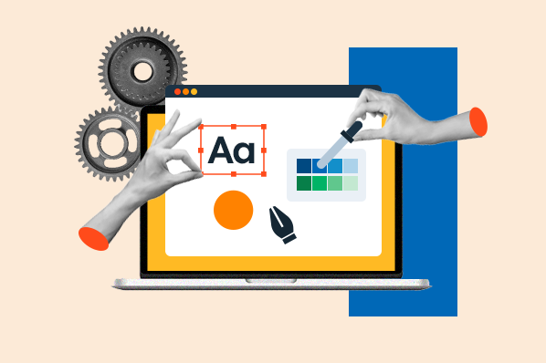

GIS Developer ArcGIS Experience Builder Web GIS Support
Bachelor's Degree in Computer Engineering
United Arab Emirates University, August 2020 - December 2024. | Ahmad
| Ahmad
Computer Engineering graduate working as a GIS Developer at gistec in
Amman. I build and support Web GIS solutions using ArcGIS Experience
Builder, ArcGIS Online, ArcGIS Pro, JavaScript, TypeScript, React, and
REST APIs.
I focus on reliable spatial applications, custom widgets, data-driven
maps, platform troubleshooting, and clear technical delivery.
GIS Developer ArcGIS Experience Builder Web GIS Support
I combine frontend engineering with Esri platform experience to deliver practical GIS applications. My work spans ArcGIS Experience Builder custom widgets, interactive dashboards, ArcGIS REST service integration, SaaS/PaaS troubleshooting, incident analysis, and technical documentation for client-facing GIS workflows.
GIS Development
ArcGIS Experience Builder Developer Edition, ArcGIS Maps SDK for JavaScript, ArcGIS Online, ArcGIS Pro, Web Maps, Feature Layers, and ArcGIS REST services.Frontend Engineering
HTML5, CSS/SCSS/SASS, JavaScript, TypeScript, React.js, responsive layouts, reusable UI components, and browser-based data visualization.Platform Support
SaaS/PaaS application support, incident and escalation handling, root cause analysis, logs, access control, authentication, and SLA-driven ticket resolution.Data & Integration
REST APIs, ArcGIS services, SQL Server, PostgreSQL, database connectivity, data stores, and map-driven integration workflows.Tools
Git, Visual Studio Code, Visual Studio, Anaconda, Jupyter Notebook, Cisco Packet Tracer, and Microsoft Office Suite.Documentation & Delivery
Technical documentation, knowledge-base authoring, client-facing troubleshooting, operational reporting, and cross-functional collaboration.Bachelor's Degree in Computer Engineering
United Arab Emirates University, August 2020 - December 2024.Make an Impact with Modern Geo Apps
Esri-focused learning around modern GIS applications and practical ArcGIS workflows.Front-End Development
Practical frontend development with HTML, CSS, JavaScript, responsive UI, and modern web application patterns.Project Management Foundations
Planning, organizing, and executing projects with clear communication and team coordination.Data Science & Networking - Cisco Networking Academy
Foundational data analysis, visualization, IP addressing, subnetting, and network troubleshooting.Building GIS solutions and custom Web GIS workflows using ArcGIS technologies, JavaScript, HTML5, and modern frontend patterns.
Supported Esri Support Center workflows by troubleshooting ArcGIS Online, ArcGIS Pro, platform access, service behavior, logs, data issues, and customer incidents.
Developed and customized ArcGIS Experience Builder widgets, GIS dashboards, REST API integrations, and responsive web interfaces for government and enterprise GIS workflows.
Collaborated with faculty on research programs including AI vehicle assistant work and a smart city optimization platform using IoT and machine learning concepts.
ArcGIS Experience Builder dashboards and widgets for map-driven public-sector workflows.
Explore MoreReusable React/TypeScript widgets for filtering, map interaction, and ArcGIS service integration.
Explore MoreCase analysis, ArcGIS troubleshooting, access control checks, log review, and RCA documentation.
Explore MoreIoT and machine learning concept for urban planning, environmental sensing, and decision support.
Explore MoreEmbedded navigation and computer vision prototype for line following and obstacle avoidance.
Explore MoreStatic HTML, CSS, and JavaScript portfolio refined to present GIS development and Esri experience.
Explore More
ArcGIS Experience Builder, ArcGIS Maps SDK 4.x, ArcGIS Online, ArcGIS Pro, Web Maps, Feature Layers.
TypeScript, JavaScript, React.js, HTML5, CSS/SCSS/SASS, responsive UI, reusable components.
SaaS/PaaS support, incident management, escalations, RCA, service logs, SLA prioritization.
REST APIs, ArcGIS REST services, SQL Server, PostgreSQL, authentication, access control, data stores.
Git, VS Code, Visual Studio, Jupyter Notebook, Anaconda, Cisco Packet Tracer, Microsoft Office.
Technical documentation, knowledge-base content, client troubleshooting, agile collaboration.
Address: Amman - Jordan
Phone Number: +962 79 111 8973
Email: ahmedsalemghaleb@gmail.com
LinkedIn: linkedin/ahmad-issa